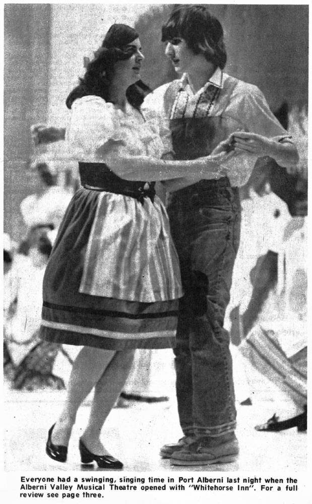
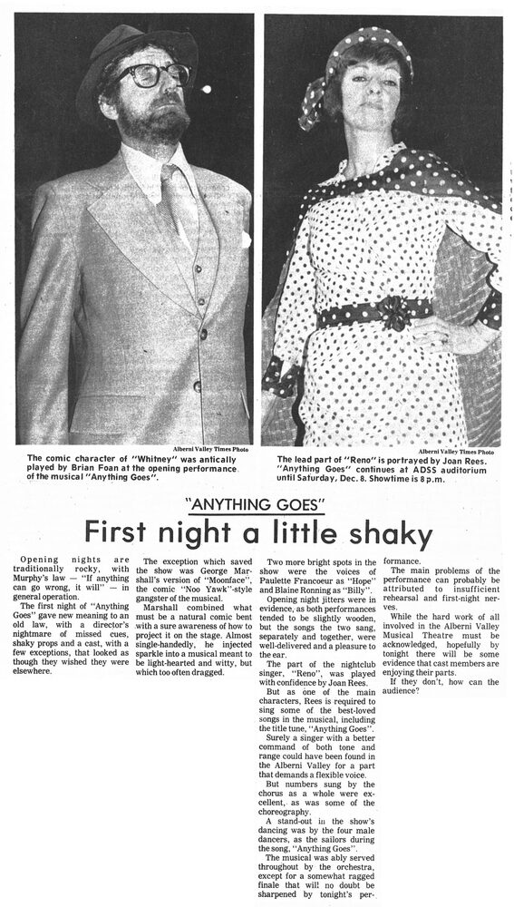
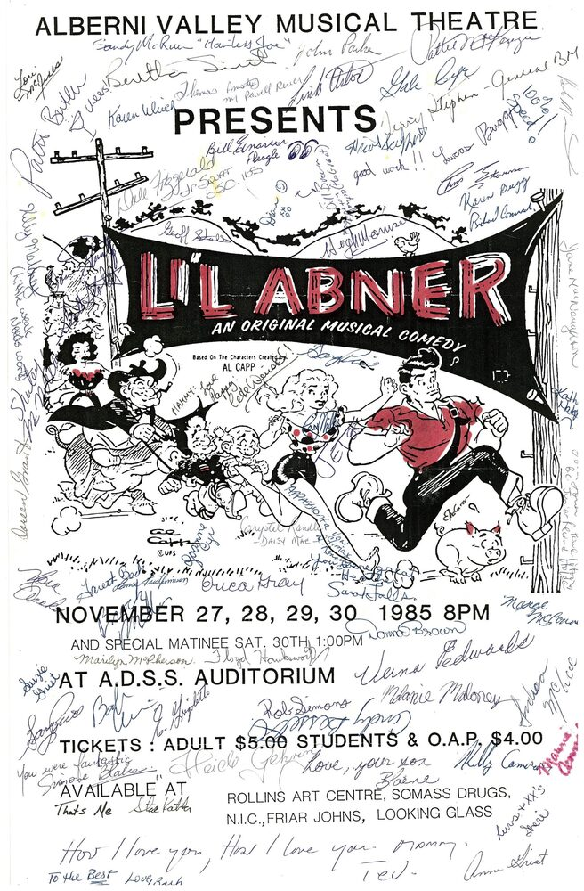
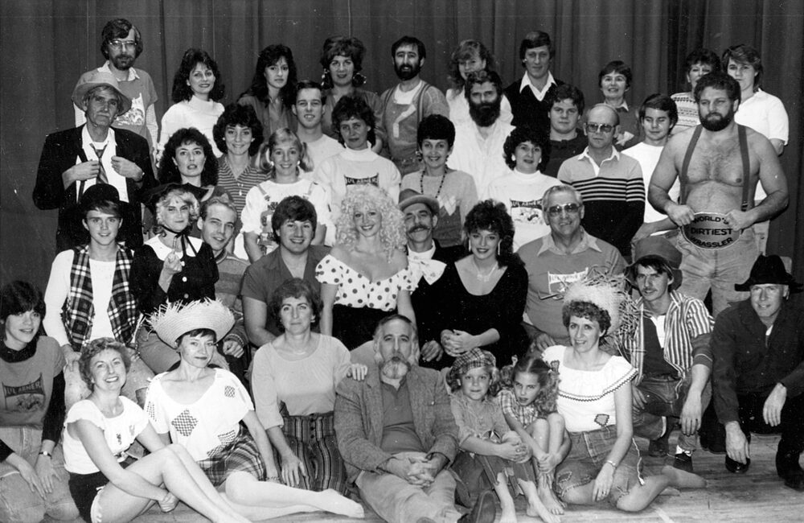

Unpublished working page. Not linked from the site and hidden from search engines. Kept for the future Alberni Valley Musical Theatre history section.
Alberni Valley Musical Theatre: archive
White Horse Inn, 1975
The Alberni Valley Musical Theatre (with the Port Alberni Orchestra and Chorus Society) presents White Horse Inn · produced and directed by John Andrews · musical director David Morgan · choreographer Mary Ann Gergely · A.D.S.S. Auditorium, 8:00 pm, January 30, 31 and February 1, 1975 · adults $2.50, students $1.50.



Anything Goes (year to confirm)
Alberni Valley Times review, “First night a little shaky”: ADSS auditorium, running until Saturday, December 8, 8 pm. Brian Foan as Whitney, Joan Rees as Reno, George Marshall as Moonface, Paulette Francoeur as Hope, Blaine Ronning as Billy.

Li’l Abner, 1985
Alberni Valley Musical Theatre presents Li’l Abner · A.D.S.S. Auditorium, November 27–30, 1985, 8 pm, plus a Saturday matinee at 1 pm · adults $5.00, students & O.A.P. $4.00.

